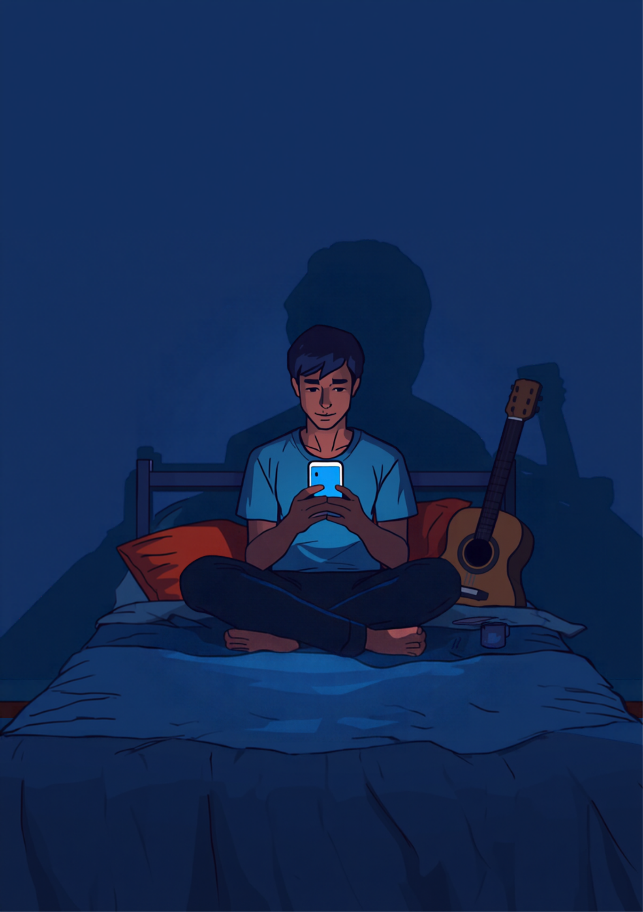
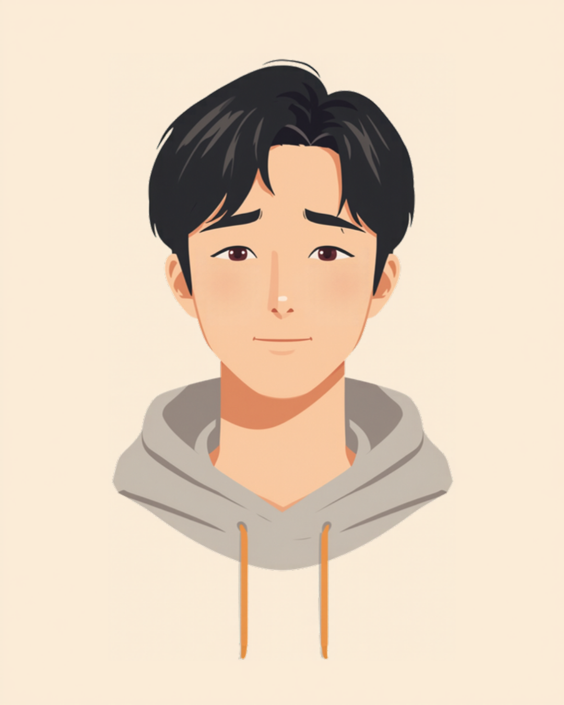
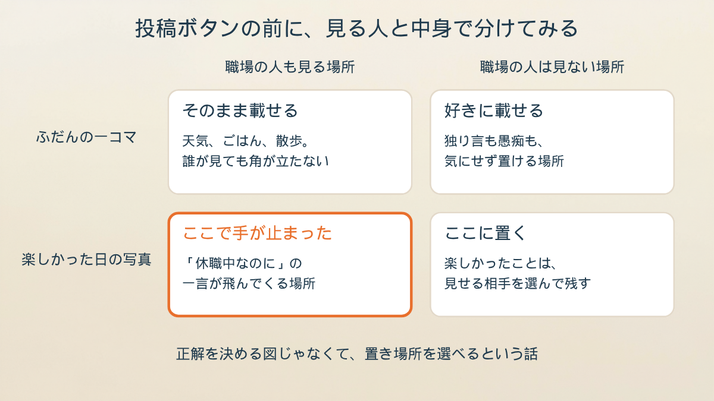
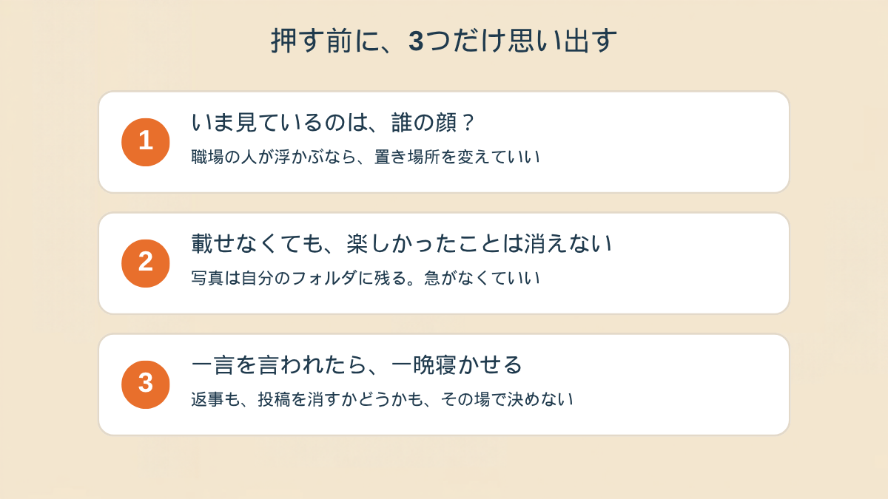

同僚から届いたDMは、その一行だけでした。
ライブハウスの前で撮った、ちょっとピンぼけの写真を載せて、まだ2日しか経ってなかった。
久しぶりに、音の中にいた日
28歳、システムの運用をしてました。
休職4ヶ月目。
その日は、学生のころからの友達がやってるバンドのライブでした。
行けるかどうか、前の週からずっと分からなくて。
主治医に話したら「行けそうなら、行ってみたらどうですか」と言われて、それでもまだ迷ってた。
前の日の夜は、着ていく服が決まらなくて1時間くらい床に座ってました。
なんで服ごときで、と自分でも思う。
結局、休職前に着てたパーカーにした。
当日は、いちばん後ろの壁際で40分だけ。
耳栓をして、最後の曲が終わる前に出ようと決めてた。
でも、終わりまでいた。

友達がステージの上から手を振ってくれて、それが、思ったよりうれしかった。
帰りの電車で、4ヶ月ぶりに「今日は、よかったな」と思えた。
家に着いて、写真を1枚載せました。
「久しぶりに音の中にいた」って一言だけ添えて。
仲のいい人が十数人見てるだけの、ゆるいアカウントのつもりでした。
その十数人の中に、職場の同僚が2人いたことを、載せたあとで思い出した。
2日後、DMが1件だけ来た
同じチームの同僚からでした。
絵文字もなし。
「休職中なのに、楽しそうでいいね」
怒ってるのか、ただ思ったことを書いただけなのか、読み取れなかった。
どっちにも取れるのが、いちばんきつい。
気づいたら、手が冷たくなってて。
その場で投稿を消しました。
消して3分後くらいに、今度は「消したってことは、悪いことをしたって認めたみたいじゃないか」と思って、また自己嫌悪。
載せても消しても、どっちも間違いだった気がした。
「私も休職中にカフェの写真を1枚あげただけで、同じ部署の人から『元気そうでよかったね』ってLINEが来ました。たぶん悪気はなかったと思う。でも、その日から『元気そうに見える写真』と『見えない写真』を毎回頭で仕分けしてて、気づいたら何も載せられなくなってました。結局、鍵アカにして、職場の人は全員そっとミュートにしました。3ヶ月くらいかかったかな、それができるまで」
返事を、一晩寝かせた
その夜は、返事の文面を何回も打っては消しました。
「ごめんね」は、なんか違う。
「リハビリのつもりで」と書くと、言い訳っぽい。
「見ててくれてありがとう」は、皮肉に聞こえそう。
1時間くらい考えて、結局どれも送りませんでした。
スマホを伏せて、寝た。

数日後、その同僚からもう1通来ました。
「前のDM、気にしないで。自分の中の問題だった」
ほっとした反面、「自分の中の問題」って何だったんだろう、とも思った。
たぶん、あの人もあの人で、休んでる人を見て何か思うことがあったんだと思います。
それは、私が引き受けるものじゃなかった。
そう頭では分かるのに、数日間はずっと、あの一行を読み返してました。

「正直に言うと、僕、前の職場で休職してる先輩のインスタ見て、『あ、旅行行けるんだ。元気じゃん』って思ったことあるんです。自分が休職する側になって初めて、あの時の自分の目つきを思い出して、うわ、って。見る側のときは、その人の4ヶ月も、服が選べなかった夜も、何も見えてないんですよね」
載せる場所を、分けてみた
1週間くらい経って、アカウントを分けました。
職場の人が入ってる方は、天気とごはんくらいの、当たり障りのないやつだけ。
楽しかったことは、見せる相手を選べる方に。
最初は「こそこそしてるみたいで、嫌だな」と思いました。
でも、やってみたら、気持ちが少し軽くなった。
載せないんじゃなくて、置き場所を選んでるだけだって、思えるようになったから。
次の診察でライブの話をしたら、先生は「そういう日があっても不思議じゃないですよ」とだけ言いました。
それ以上は何も足されなかったけど、あのときは、それで十分だった。

この記事に、聞いてみたいことはありますか？
「自分の場合はどうなんだろう」と思ったことを、気軽に書いてみてください。いただいた質問は個別にお返事したうえで、匿名で記事にすることがあります。